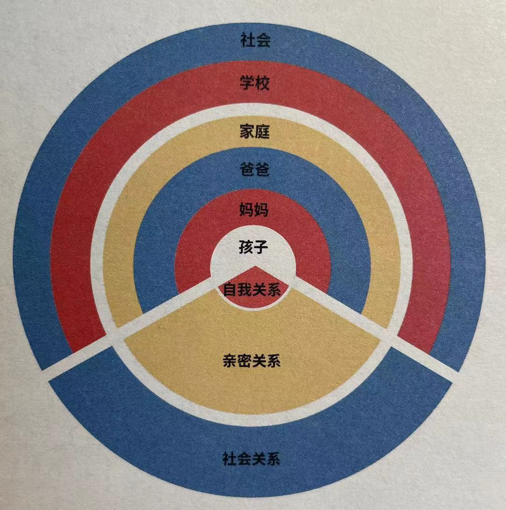

推荐序 善待每个孩子，使我们每个人该做的事
8 爱和控制是完全不同的：爱一个人，是希望他好，希望他开心，希望他快乐；控制一个人，是要求对方只能按照自己的方式快乐，带有很强的占有欲。父母要意识到，所有对孩子的伤害，最终都会进入孩子的潜意识，影响他的一生。唯有改变自己，改变与孩子的互动方式，才可以降低甚至消除这种不良的影响。
. 樊登
樊登读书创始人
推荐序 我们需要怎样的教育？
11 将自己的价值观强加到孩子身上，恐怕并不妥当。我们要做的，是为孩子提供平等对话的平台，不要打压他们表达自我的欲望与能力，给他们支持，让他们更勇敢地去探索未知的世界。如果这个世界让我们感到焦虑，需要学习的是我们自己。
. 程武
腾讯集团副总裁，阅文集团CEO
自序
14 这个探索，首先从儿童自身开始，帮助他们建立真正的自我是他们成长的根基。紧接着是母亲——孩子最亲密的监护人，她们应该在这种亲子关系中扮演什么样的角色，如何建立有效且健康的养育关系。紧接着是父亲，虽然可能大部分父亲与孩子的关系不如母亲那么紧密，但是，他们究竟应该如何有效地承担一个父亲的角色，也是儿童友好很重要的议题。再往外扩展，就是整个家庭、学校、社会，这一整套的关系实际上包含了孩子与自我、自我与他人、自我与社会、自我与世界的多重关系。
CHAPTER 01 你好，小孩
对自己的真正友好是精神独立与天赋自由
孩子是天然的学习者
5 在很多教育相关的书籍、文章中，我常常看到这句话："孩子，是天然的学习者。"
7 好吧，你既然说孩子都是天然的学习者了，我们做父母的就靠边站好了！类似这种 非此即彼的反驳 ，这些年我遇到了太多。
9 在这个过程中，我想你也会发现，孩子固然是天然的学习者，但充足的学习材料、作为辅助者的成年人、宽松的氛围、鼓励自主与合作的导向，却是我们父母不可推卸的责任。成年人大都明白"只有主动积极的心态才能产生效率"，孩子的学习更是如此。
. 我希望自己成为一个在中间行走的父母，成为那个辅助生命前行的人。孩子的生命是属于他们自己的，我们要完成的职责是尽量让他们双腿的肌肉越来越健壮，走得越来越稳健。成为这样的父母没有捷径可走，只能靠着对一个生命的责任，靠着真正的爱和包容，不断摸索前行。这种爱让你不厌其烦地去调节具体的"技术动作"，不断地去激发孩子内在的、对这个世界进行探索的热情。
小萌说 .
在日常生活中，鼓励孩子的求知欲，引导他自主探索。
- 不要一味地追求超前教育，而不顾孩子的年龄和认知水平。
- 在孩子有兴趣的地方鼓励他自己动手，如果孩子没有主动寻求帮助，家长不要过多干涉。
- 养育就是不断地寻找平衡，不能无视、放任，也不能过度地干涉、保护、代劳。
基础人格：构建属于自己的人生
11 我的人生已经过半，我想如果把女儿看作是一个跟我探讨人生的年亲人，而不是"我的"孩子，我会给她哪些人生建议呢？
我会说："年轻人，一个人能够活出属于自己的一生，是最重要的。不是因为父母的期望，不是追逐社会的潮流，不是受到同伴的影响，始终要做自己，才不枉过一生。那怎么才能敏锐地感知自己是谁、自己究竟想要什么？很重要的是始终相信自己是好的、是有价值的，值得被人帮助，也总会有人帮助的。融合而不退缩，独立而不孤立，敢于选择、敢于承担，即便到了老年，都还有自己的目标。 "
12 研究得出的结论是，幸福与财富、名气或是是否努力工作无关，而好的人际关系可以使我们更快乐、更健康，就这么简单。
. 孤独与拥有的朋友数量无关，与是否结婚或恋爱无关，关系质量才是根本。
13 没有安全感，到底有哪些表现？我们拿成年人的一些表现来概括：因为担心被背叛，先背叛或死缠烂打；因为担心没有回应，而不发出任何主动信号；因为担心被拒绝，而拼命提出无理要求，再以此证明自己确实会被拒绝......孩子没有安全感的表现，我们就更熟熟悉了，情绪不稳定，安抚困难，回避，畏缩......
14 安全感强与不强，不是用来定义孩子的，而是用来提醒我们注意自己的行为的。
英国精神分析学家温尼科特认为，真正的自我来自于早期的人际关系，来自于母子之间脆弱的和谐关系，母亲的反应告诉你："你就是你。 " 你感受到的一切是真实的，做自己是安全的。
15 除了我们自己要做到有同理心，还有一点至关重要，就是要让孩子理解我们所生存的世界，不是一个非黑即白、非对即错、非好即坏的世界。生活在这样的世界里，需要对他人宽容。
16 拥有多视角、宽容的眼光，孩子才会慢慢建立起同理心，在与别人沟通、合作的时候，才能更容易、更顺畅。
小萌说 .
- 在当我离开这个世界的那一天，怎样的他/她会令我安心、放心？
让天赋自由
17 有人把养育孩子比作一场修行，我认为十分贴切。没有人是天生的父母，但每个孩子都是天生的观察者，他们观察着父母的一言一行、一举一动，然后用某种方式内化为一个全新的自己。
18 之后，我很认真地和我女儿沟通过：我告诉她："妈妈、爸爸、姥姥、姥爷在年轻时都非常努力地工作过，工作不仅仅是为了挣钱，而是要对别人有用，帮助别人，或者是改变一些觉得需要改变的东西。"
. 毕竟，一个人说什么不重要，重要的是他做什么。
如果我不去工作，每天只是待在家里，那么，孩子会很自然地认为一个人是可以这样生活的。我不希望给孩子，特别是女孩子，暗示如此的价值观——只要我把她养得漂漂亮亮的，将来嫁个合适的男人，就是成功的人生。
. 我认为作为现代女性，无论选择做贤妻良母还是为事业打拼，都没有问题。你既可以当一名律师，也可以做一名瑜伽教练，重点在于你要有自主选择的权力和从容进退的能力。
19 回溯她的成长经历，大概多半是来自于敬一丹大姐一直奉行的"自主决定式"教育——家长在亲子关系中主动后退一步，不是完全放手不管，而是会跟孩子分析利弊，然后把最终的决策权交给孩子。
这一切的努力，都是在培养一个高自尊的人。自尊是指人对自己的评价、界定和认同。
家庭治疗专家萨提亚认为，有较高自尊的人往往拥有内在的安全感，能够欣赏自己的能力和长处，并接受自己的弱点和限制，为自己的决定负责，独立自主和适应变化的能力也较强。
低自尊的人依赖性强，常觉得自己没有价值，对自己和别人都缺乏正面评价，对自己很苛刻，很难接纳自己的弱点和限制，变化对他来说是一种威胁。
20
| 高自尊 | 低自尊 |
|---|---|
| 我要被爱 | 我正被自己和他人所爱 |
| 我将做任何事情 | 我做我觉得合适的事情 |
| 我要让你感到内疚 | 我尊重我们的差异性 |
| 我要从现实中分离出来，才不会受伤害 | 你我都是整体中的一部分 |
| 我要否定现实 | 我接纳我所处的环境 |
. 也就是说，自尊不仅来自于自己的评价，也来自对他人评价的感知，特别是和自己亲密的人。
. 毁掉孩子的，是以爱为名的干预。
21 有很多父母，虽然初衷嗜好的，但是他们的行为和语言往往会打击孩子的自尊心。比如，孩子考了九十分，父母并不表扬、肯定他，反而说："别的孩子能考一百分，你为什么没考到？"堂而皇之的理由是：怕孩子骄傲。
一次、两次、很多次，孩子的努力不被看见，就会很自然地产生自我否定的消极心态。他会觉得自己的努力不值一提，而且永远也不能让父母满意。 这种心理对自尊心的打击相当大，逐渐地他会不敢尝试，拒绝尝试，不愿意再付出努力，也在心里永远关上了与父母沟通的大门。
22 《让天赋自由》的作者、TED排名第一的演讲人、知名教育家肯·罗宾逊说："没有人能准确预测未来的面貌，迎接未来的唯一办法，就是'找到个人热情与天资结合之处'，在自己热爱且擅长的领域发展，便能缔造更高的成就并实现自我，借以培养更强的应变能力。"
爱，驱动孩子成长
24 当然，生活是诗意和失意并行的，养育孩子这件事尤其如此。
. 父母的绝大部分焦虑来自于对养育细节的过分在意。如果不弄清做父母的本质究竟是什么，那很有可能是越努力错得越多。
26 不难想象，有多少孩子生活在这样的家庭教育氛围中：学习不是最难的，难的是学习要好到满足家长的预期。一旦不好就会为家长可能的失望而感到害怕和焦虑，渐渐养成了对家长"报喜不报忧"的习惯，即便有了心理问题，家长也不在他们求助的第一序列里......
27 艾莉森·高普尼克说："亲子关系中，最基本的信任要比教养方法更重要。"
童年逆境的生理创伤
31 比如我们身边最容易出现的冷暴力、语言暴力、人格侮辱、情感忽视......这些没有被作者列出的、对孩子不那么极端的伤害，难道就不会对孩子的未来产生影响吗？
32 看到这样的描述，我真的好想抱抱童年时的他们，那些无助的小男孩，他们和他们的父亲当时并不知道，那些突发事件会折磨他们一生。
. 《平和式教养法》认为，只有在我们拥有体力优势的时候，使用武力迫使孩子配合我们的模式才会奏效，孩子不得不选择服从我们的命令。所以，很多父母与孩子的互动无非是由一系列的贿赂、威胁和权力争斗组成的。但如果父母能与孩子深度连接，孩子就会希望保护亲子关系，更倾向于跟从父母的指导。
33 平和父母与普通父母的区别是，他们承诺自律、教导，而不是控制。由于亲子关系其实是一系列即刻的组合，所以所有的正面选择都会累积起来。如果孩子相信我们真的站在他的那一边，他就愿意放弃按照自己的心意行事，做他更想做的——与我们积极连接。
设定有效限制的关键是同理心，也就是移情。 同理心并非放任不管。严格与宽容的最佳组合是给孩子提供支持并满足我们的期望。
. 我们可以：承认孩子的感受和需求、重新调整孩子的冲动、让他们说出自己的愿望、给孩子一个选择、用游戏的口吻要求孩子配合、以行动捍卫你的边界、邀请孩子与你共商双赢的解决问题方案。
性格内向与社交力 36 现在看，我女儿就不是一个"可以马上启动"的孩子，她需要给自己时间，需要一个观察和融入的过程，而且她有自己的一套策略。
. 事实上，慢热不代表没有社交能力，每个孩子都是独一无二的。
38 所以，不论孩子性格是内向或外向，我们要做的是把孩子带进社会，让他们可以生存、可以融入、可以沟通协作、可以找到群体、也可以找到自己的位置。这些是社交能力的基本，而不是一味地想要把孩子培养成"社交能人"。
. 我们要做的是，带着孩子走出去，体验不同的场合人群，自己也要从容不迫地和人交往，也就是创造环境、以身作则，接受孩子的退缩或羞怯，耐心平和地静待花开。你越自然，孩子越自在；你越强迫，孩子越抗拒。
39 社交的本质其实是一种连接力，人与人的互动构成了这个连接的网络，它的价值在于，当你有迅速与别人建立起合作关系的能力时，这张网络才会更加稳固，伸向更远的未知的地方。
《园丁与木匠》一书中是这样描述不同特质的孩子所承担的不同使命的："人类也会出生特点各异的孩子。他们的性格、能力、强项、弱点、智力水平、技能禀赋各不相同，千变万化，无法预测......若生活一切安好，那'安全第一'的保守策略当然更容易成功；但当风暴来临之时，冒险精神变得更重要，到那时，过去依赖生存的策略都不再管用。当然，最无法预测的是，变化到底会不会来临。因此，如果我们身边既有胆小者，又有冒险家，那每个人的生存概率都会提高。世事安稳时，保守派们确保冒险家安然度日；当变革来临时，大胆开拓、锐意创新的人可以把收获的果实分享给胆怯的同伴。"
小萌说 40
不要因为孩子的一时害羞、认生、不爱说话，就给孩子扣上"社交障碍"的帽子。
- "合不合群"、是否"外向"不能作为评价孩子社交能力的标准。
- 孩子需要在成长中一点一滴地去塑造生命的多样性、丰富性和可能性，我们家长能做的就是放下焦虑，去拥抱和承受这种生命的不确定之美。
学习的周期性和自主性
41 学习应该是主动的，是手段，是过程，是工具，是终身的。作为母亲，我能给孩子最大的帮助，就是给她提供所需要的学习成长环境，让她能够达成自己想要达成的目标。 这个目标也许是世俗意义上的成功，也许与成功相去甚远，也许是完全超出我认知的事情，但我希望有一条不会变，无论怎样，这个目标是我女儿自己想去做的事，是我女儿自己想向世界表达的自我。
. 每一个家长都认为自己的孩子都是独一无二的，既然如此，家长就应该去发现、了解并且尊重他的个性，然后按照孩子的个性，轻微地去引导。
"轻微"这两个字，其实特别难做到，所谓举重若轻，是一个非常高的境界。
相反，如果父母忽略了孩子本来就具有的天然的学习本能，或者说完全不信任孩子是具备学习的热情和动力的，把希望完全寄托在强制和错误的干预上，不仅会让孩子本来应有的兴趣变成一种无望的挣扎，也会让父母丧失应有的信念。
45 这件事告诉我，当新的挑战出现，孩子需要时间去理解和适应，这个过程可长可短，父母要做的不是无所作为，也不是强行干预，我更愿意称之为一种协作。我们和孩子并肩作战，帮助他顶住压力，分析优势，化解情绪，共同面对挑战。
. 家庭对孩子的影响，不在具体的学科知识上，而在日常的习惯养成和我们对孩子的态度中。
46 问题出在我们太"自恋"了。我们不相信孩子可以自觉，不相信他们有积极上进的本能，更不敢给他们支配自己的自由。
. 孩子在自由的时间里，充分体会我想做什么、我该怎么做，学会取舍、判断、与人沟通协作，这些都是学习的过程，也是在为未来的学科学习做能力上的准备。
48 所以，焦虑的父母们不如先放松心态，等一等孩子，让他们的能力跟得上目标，用你对他的爱、支持和信任，保护他们作为一个天然学习者的天赋。如果你真的相信孩子，给他们一个时间表，就会发现孩子的适应能力远远超过我们的想象。
用感知和体验打开世界
52 作为父母，当我们不知道该怎么做的时候，其实还有一个选项常常被我们忽略，那就是——什么都不做。
. 教育，不是我们和孩子之间的较量，而是我们和自己内心恐惧的搏斗。
53 陡坡之上，越是爬的高，越是艰难，眼看着她快要到顶的时候，上面的人审下来两根登山杖，想要把她拽上去，她拒绝了帮助，一鼓作气，翻过了山坡。
54 让孩子去感知和体验就是在帮他们搭建一种心理机制，在过去的经验上帮他忙建立一个又一个新的高点。当他们遇到人生中的难题是，不会被轻易击垮，因为他们的心中已经有了一个参照——我连这么难的事情都经历过了，眼前的困难又算什么？就像后来每当女儿学习新的东西有畏难情绪的时候，我就会说："这不过是一个新的沙丘哦。"
55 阅读是最简单的丰富孩子体验的途径。书籍里的文字就是别人的大脑记录，阅读就是打开一个个的窗口，孩子会在各种各样的"别人"的经历中，触及快乐、悲伤、同情、感动，慢慢变得敏感，学会分辨对错，能够体谅别人，明白什么是道德，最终解锁人生智慧。
. 尤瓦尔·赫拉利在《未来简史》里面有一个观点，知识等于体验乘以敏感度 ，也就是说，在未来的时代，如果你的体验度不够、敏感度不够，就等于在未来失去了竞争力。对于那些创新的机会、创业的机会，你根本没有办法抓住，因为你"看不到"，或者说你没有能力看到。
58 每一个看似成功的商业模式背后的盈利模式，都来自于体察他人痛点问题之后的解决方案。
CHAPTER 02 友好妈妈
母亲从本能感性到理性自觉的成长
孩子对于母亲的意义
61 但是，生孩子确实需要一个前提，不是钱、不是学区房、不是决定物质条件都齐备了......而是，你自己，真的真的，想要一个孩子。不是丈夫想要、婆家想要、娘家想要、别人想要，而是，你，自己想要。
因为，只有自己由衷地想要成为母亲，想要和一个小生命共同成长——
我们才能在孩子情绪崩溃的时候、犯下错误难以原谅的时候，或是我们自己陷入人生低谷的时候、生活出现重大变故的时候，依然坚定而勇敢地承担着一个孩子的托付，充满力量地拉着孩子的小手一同走向捉摸不定又充满希望的未知之旅。当然，也有很多很多女性，当妈妈前并没有想那么多，但当一个小生命出现，自然就产生了无私的爱和一往无前的勇气。
62 多少人担心， 有了孩子就多了一个沉重的负累，但从过来人的角度说，承担责任的人自己也收获着充实和喜悦。
63 我这么在意明确这个孩子是我自己要生的，还有一个意义，就是在以后的养育之路上，有任何突发和意外，我都不会有埋怨，不会有不耐烦，会愿意为自己的选择负责。 如果不是自己愿意生的，很可能日子好的时候，怎么都好，但凡风吹草动，妈妈心里得有多大的委屈。而直接被这委屈伤害的，就是孩子。
64 带着这种期待，等到她终于来到我面前的时候，看着还那么弱小的她，我觉得她是一个和我完全平等的生命体，那一刻，我再次感受到对于生命的敬畏，而这个生命，将和我永远连接。
. 不要小看心态的力量，正因为这种对生命的基本尊重，在我跟孩子相处的过程中，我惊喜地发现：当我用心"养"她的时候，其实我是把我自己也"养"了一遍。养，养育的养，滋养的养。
用人类学家的视角看待孩子 70 人类学教授约翰·奥莫亨德罗在《像人类学家一样思考》这本书里写道，人类学家面对陌生的族群，"除了解释，他还要努力去理解、接受、保护，有时还要悦纳、捍卫、评价一种不同的生活方式。有些群体可能说着与我们不同的语言，与我们有着别样的历史和习俗，或是在世界观、组织方式、价值观、对死亡和美丽的认识上都与我们不同 "。
如果我们像人类学家对待世界的态度一样去对待孩子，不预判他们的动机，不预设他们行为的结果，而是用一个更开阔的视野、更细致入微的视角去观察去对待孩子，我们是不是可以做出更多对的反应？
71 也许你会说我对孩子太细了，孩子不皮实。其实，很多时候，养育没有最佳方案或唯一正确方案。
. 我爱说的是，当孩子哭闹、有情绪的时候，不管在我们眼里他的理由有多小，对他自己来说都是天大的，他在那一刻都是痛苦的。
. 身在其中的父母，被情绪裹挟着，选择性忽视了孩子的内在需求，所以我一定要做的一件事情就是，告诉父母换个视角去看待孩子的行为，去体谅孩子的内心，把我们的孩子从无法言说的痛苦中"解放"出来。
72 我之所以没有急于评判，是因为出发前我在读的一本书，挪威奥斯陆大学的社会人类学教授托马斯·埃里克森所著的 《什么是人类学》 。在这本书里，作者提出了一个观点，人类学家面临的一个特别大、需要时时刻刻提醒自己的问题，就是如何放弃自我的优越感，站在一个平等的立场去观察这个世界，尊重不同的民族、不同的风俗习惯，尤其是面对在现代人看来尚显未开化的文明 。文化优越感会阻碍我们接近真实，俯视的姿态会让我们的感知力下降。
. 当你一旦将自己放在一个较高的角度，带着高高在上的视角去观察一个未知的人群或者未知的文化，本身就是一种不尊重。
73 加州大学洛杉矶分校的神经心理学教授艾伦·舒尔认为：孩子无法对情绪进行必要的自我调节，而良好的情绪状态又是大脑健康发育必需的，所以成年人必须充当一个外部调节器，帮孩子来整理情绪。
75
我：每个孩子、家庭都不一样，没有统一的手段去解决貌似相同的问题。要相信，你就是最了解你的孩子的，方法在你和孩子的手中。妈妈要学会看到每一个问题背后的本质。
她：好的。我会和孩子一起探索。看到小萌姐说的这段话，莫名戳中泪点。
76 心理学家哈里斯在《养成假说》一书中提到，他认为一个人的成长离不开两个因素，先天遗传与后天环境。现代流行观点却往往突出后天环境的作用，将教育的意义放到了无限大，而忽视了先天遗传的因素。
家庭不是道德殿堂
80 在《妈妈的悔过书》里曾经有一个观点，要判断你是几等的父母，就看当孩子 突然看见你 时的第一反应。如果孩子惊喜地向你走来，那你就是一等的父母；如果孩子没有跑过来，但仍微笑着打招呼，属于二等父母；如果孩子认出是父母，却不情愿地打招呼，属于三等父母；如果孩子假装买看见改走别的路，属于四等父母。
81 这件事让我想得最多的是：家，对于每一个人应该意味着什么？
就拿我们成年人来说，下班就想往回赶的家，一定是你可以放松的地方，卸下盔甲、摘下面具也无需担心的地方。对孩子，何尝不是呢？家也是孩子放松休息、积攒能量的地方，有了这个能量他才能充满勇气地出去"打拼"，而不应该时常 有个监视者在他身边 。
很多父母在教育孩子时，不自觉就站在监视者的位置上，要么是苛责的评判，要么设定严格的规则，站在道德地高地却浑然不觉，慢慢地与孩子的心践行渐远。有多少孩子，在外面遇到大事时，第一时间不是与父母沟通、寻求父母的帮助和理解，而是想尽办法掩盖、隐瞒、独自承受痛苦、求助于他人，从而被再一次伤害。
当孩子遇到任何困难，我希望她第一个求助的人是我。
83 仔细思考，父母的那些再平常不过的话，就像是给我打了一种"不在乎物质、不在乎钱"的标签。而我一直被束缚在这样的牢笼里没有挣脱出来。直到人生遭遇困境，我才恍然大悟，钱不是万能的，但却可以在危急时刻给你安全感。也感谢生活的变故，让我有了一次彻底挣脱出来重新思考人生的机会，我这才渐渐走出这些阴影。
84 也只有帮孩子先接受真实的自我，父母才有机会进一步告诉孩子如何管理自己的欲望，如何尊重他人的感受。如果父亲大摆父道尊严，假装清高，劈头盖脸一顿指责，孩子会误以为自己是错的、阴暗的、需要压抑的。
. 但是，我们也不得不反思，如果这个家不能让孩子觉得"我放学太累了，想回家休息"，孩子在外面受了委屈，也不想赶紧回家和父母诉说，这样的结果是不是已经和我们的期待背道而驰了？
. 站在孩子的角度想一想，其实不难理解，对于孩子来说，如果家庭变成了一座道德殿堂的话，那么孩子就会无路可退。孩子一旦遇到事情，首先会感到极大的自责、担忧和恐惧，觉得自己辜负了父母对自己的期望，害怕告诉父母之后要面临父母的失望、责备甚至是惩罚，当孩子把父母放在自己的对立面，他也就会从心里对你关上门。 这个沟通的渠道一旦断了，父母的养育才真的失控了。
85 当我们想清楚这一点，应该怎么做就变得非常简单，只有努力地营造出安全、包容、温暖的家庭氛围，我们才能一直拥有和孩子沟通以及引领他们的可能性。唯有如此，才能让孩子愿意把家作为自己疗伤和避风的港湾。
母亲，从深刻的链接到主动的分离
87
第一句，要相信孩子有他自己的使命。他们幼年时依赖我们，但不是依附于我们，他们有他们自己要去经历的人生。
第二句，要相信孩子有强大的修复能力。我们在养育孩子的过程中，不可能不犯错，不可能完美，但只要爱的基调在，孩子完全可以自己修复，有那些原生家庭一塌糊涂的人，依然走出了宽阔的人生。
第三句，要相信自己，相信你就是最合适自己孩子的妈妈。你有权利按照自己的风格养大你的孩子，相信自己的教育背景、工作经验、人生阅历足以支撑你养大一个孩子，把自己的节奏控制好，孩子的人生道路也会顺畅。
第四句，当下就是最好的时光。孩子的当下，不是为未来做准备，我们和孩子的每一分钟都值得好好珍惜和品味。
第五句，把你在诊室里的自信和力量感，带回到亲子关系里。
88 我的牙医非常敏锐地总结道："我听到了你说的一个关键词，就是相信，相信自己，相信孩子。"
. 链接，是因为母亲孕育了孩子的生命，她与孩子在生理和心理上天然亲密；分离，是因为我们生而为人，终有一天要完成完全独立的个体，去走各自的人生路。
89 著名心理学家阿德勒的一句话:hlr:"幸福的人用童年治愈一生，不幸的人用一生治愈童年" 现在很时髦。基本的安全感，是我们只要注意或稍加努力就可以给予孩子的最重要的礼物。情绪波动大、有攻击性、难合作的孩子和易沟通、平和、适应性强的孩子之间，差的可能就是基本的安全感。
90 从孩子的出生、母子身体分离的那一瞬间，就开始滑向一个必然不断丧失的过程。如果你试图去控制他，你就会越来越痛苦。
. 如果母亲与孩子始终保持着不分离的状态，孩子就无法长大，无法形成自己的人格，这些都将影响孩子的自立。
91 年幼的小角马，虽说也能感知河水的深不可测，但只要妈妈跳了，他们就会毫不犹豫跟随着妈妈纵身一跃。角马妈妈们深知前路艰辛，但更知道此刻容不得犹豫或停留。不管母爱多么深沉，多么细腻，在河水中，孩子们只能凭借自己的力量生存或向前。
92 有一天，我女儿突然问我："妈妈，你喜欢我吗？"我说："妈妈有时候可能会不喜欢你做的一些事情，但很喜欢你。"我女儿又问我："妈妈你恨我吗？"我说："有时候。" 她又问："那你爱我吗？"我说："永远。"女儿就说："妈妈，我对你的答案非常满意。"
这一刻，我觉得很欣慰i，也很庆幸在养育女儿的过程中，我努力去用一种平等、自由的方式和女儿相处，让我们双方都能处于相对独立同时也比较舒服的相处状态中。我虽然是目前，但是我也有自我，而且我的女儿也知道自己的妈妈可以有自己的想法，她也可以放松地表达自己。
只做六十分妈妈
97 想办法把那四十分还给孩子，作为母亲，我们只要just enough （刚刚好）就可以了。偶尔缺席孩子的生活，孩子多了属于自己的空间和与他人相处的机会；偶尔发脾气，孩子可以感知情绪的存在和边界；偶尔偷懒、偶尔犯错、偶尔自私，孩子可以知道妈妈也是个普通人，不是完美的神；赚不到足够多的钱，无法接送孩子去最理想的学校，孩子最终会找到自己的路；为了自己的需要产生离婚的念头，孩子因此脱离一团糟的父母关系，反而会得到一丝喘息。做不到一百分，但做到六十分也可以。
. 最好的养育来自妈妈天然的自我信赖和独立自信，妈妈是一个鲜活的人，这比育儿理念更重要。
101 有一本书叫作《如何让孩子成年又成人》，是美国知名教育工作者、连续十年担任斯坦福大学新生教务长的朱莉·科斯科特·海姆斯写的，我看过它的TED演讲，印象深刻。我们往往注重孩子的成才，却忽视了他们的"成人"，孩子们如果无法自己去寻找自我、承担责任，必然不会度过真正快乐的一生。
哪些做法会阻碍孩子成年又成人呢？
- 你有没有以"保护"孩子的名义，过分插手孩子的生活？
- 你有没有过度介入孩子的生活，代替孩子做他本该做的事情？
- 你有没有剥夺孩子自由成长的机会，有没有让孩子屈从于升学的"军备竞赛"？
. 书里说："孩子们的人生，并不应该遵循着一条设定好的路走下去。他们应该独立而自主，每个人都有着自己的激情和灵感，而我们的认为就是去帮助他们发现自我。"
102 我想说，很多养育原则都有着各种完美的要求，也是父母应该知道的道理。但是，当父母自身该做的事、该完成的使命，和那些原则冲突时，怎么办？我会选择跟随自己的内心，去完成自己的使命，实现自己应有的社会价值。
. 而当你全身心投入工作、因为利他而体会到价值感，孩子也会因此得到最好的"身教"。你留下的空白，孩子会用他们的独立去填补。
所以，做父母，尽力就好，六十分即可。
妈妈要柔软，也要坚硬
103 慈母多败儿，这里说的"慈母"是溺爱过度，并不是真正的慈爱；为母则刚，这里的"刚"是坚强、有担当、能够保护别人，而不是在孩子面前不苟言笑。
. 每一次采访最有价值的东西，是采访者闭上眼睛就能想起的片段，是逢人就愿分享的故事，更是潜移默化改变自己行为、观念的影响。
106 我在节目里说，当面对突如其来的意外、困难或者苦难的时候，我们用什么心态去看待它，我们传递给孩子什么样的信号，是积极的，还是消极的，都影响着他们当时的心态，更影响他们未来独自面对生活时的选择。
108 以前的我非常回避冲突，回避跟别人产生争执。但是现在，因为要让女儿、让女儿周围的环境知道，她有一个坦然、讲理、强大的妈妈，我开始改变了。
. 我相信，在当时，她的妈妈一定是有愧疚，但是，我同样相信我们不能超越时代、不能超越家庭的实际情况去谈养育。
109 因为我知道，孩子是在游戏，在游戏中，没有那么多长幼有序；我也知道我是怎样的妈妈，会教出怎样的孩子。
做孩子了解自己、了解世界的桥梁
112 我之所以这样做，就是想让她知道，当世界误解你的时候，你要有能力、有勇气去解释，而不是哇的大哭一声抛开，用情绪来代替行动。但那时候她太小了，还不能理解这个道理，我只能做给她看。
113 其实这是一件生活中挺常见的小事，如果放任误会或者用语言反击，不但解决不了问题，还有可能加深矛盾，而教孩子去解释、用沟通去解决问题，无疑会起到事半功倍的效果。
作为妈妈，教会孩子正确地表达情绪，就是帮助孩子建立一种与世界的良性关系。很多时候，孩子的时空正是由于不知道该如何表达情绪造成的。孩子在幼年的时候，简单的开心与伤心他们可以辨别，但是更加复杂一旦的，例如消沉、嫉妒、沮丧等等这些情绪，他们还无法做到将自己的感受与表达相对应，在这个时候，我们可以先将这些词告诉孩子，让他们记住，对这些词有个初步印象，之后再找到与之对应的情绪。
114 感知与表达之间那道看不见的鸿沟，需要她自己跨越，而父母的引导，就是架在鸿沟上的桥梁，用来帮助她走出识别表达上的困境，就是架在沟通上的桥梁，用来帮助她走出识别表达上的困境。我希望孩子可以与自己的内心相连接，认识自己以及与他人、与世界的关系，从容自信地面对人生，以一个开放的姿态去理解这个世界。
115 然而，死这个字，如果被当做一个动词，它应该是中性的，它是大自然中万物生长和消亡的必然环节，却远远不是终点。
. 我想这句话背后的意思是，女儿对我的爱已经超越了肉体，她并不在意我用什么方式陪伴她，哪怕她只有五岁，但已经约略知道死亡不可避免，但总有可以留存的东西。
116 孩子正是通过不断提问、不断试探来不断地明确边界，在之后的日子里，她会读更多的书，见到更多的人，遇见更多的事，死亡是不可避免的存在，但我相信她至少能接受自己的情绪，然后尽量用平和的态度去面对和谈论死亡。
小萌说 117
- 当孩子不会表达时，我们可以帮他"说出来"，这样可以让孩子知道，当世界误解你的时候，你要有能力、有勇气去节水，而不是用情绪代替行动。
给孩子"开后门儿"的教育
120 我的理解，是否开后门儿其实就是黑、白、灰的问题，所谓的后门儿就是出于非黑即白和富有弹性之间的一个位置。马化腾非常崇尚一种管理理念，叫做" 灰度思维，黑白决策 "，意思是我们在下定论的时候还是要非黑即白，也就是要有准确的决策指令；但是思考的过程可以是有规律的、有弹性的。
这样的思维方式可以给我们提供更丰富、更多元的思维视角和价值观思考，帮助我们看到事物的本质，最终做出更有利的选择。教育也是如此。给予孩子充分的宽容和理解，包容孩子多元化的思维和行为方式，孩子才能感受到一种温度，从而得到更为健康的发展。
121 无论是成年人还是孩子，都喜欢有一定自由度的环境，成年人在自由度较高的职场环境中更容易做出创新性的尝试 ，孩子也是同样，宽容、自由的氛围更能激发他们的潜力、创造力，培养孩子的自信心和主动学习的品质。
122 玩着玩着，这个女孩突然对妈妈说："妈妈，我终于知道这里跟其他地方有什么不一样了。"妈妈问："有什么不一样？"女孩说：" 这里给了我们自由。 "只有，一个可以多解的词，在孩子生命早期，就这样被自然而然地感受到了。
. 然而教育不该是铁面无私的，总需要有一个柔软的余地，大人要是在适当的时候有所退让和妥协，这样教育的效果会远远好于步步紧逼和铁面无私。
123 根据萨提亚的理论，一个封闭的系统通常由具有下述特点的家庭成员构成：
- 彼此警惕
- 具有敌意
- 感到无能为力、被控制、消极
- 观点和行为上僵化
- 用冷漠的面孔对待彼此
. 比如，根据萨提亚的方法，我们可以在"不要和大人顶嘴"的大原则下，给孩子加几个"可以顶嘴"的例外情况：
- 当我想要表达自己的感受的的时候
- 当我感到自己正在被辱骂和虐待的时候
- 当我感到自己一文不值的时候
124 他们由此能切身地感受到温暖与安全感，觉得自己的爸爸妈妈是很疼爱自己的。当孩子感受到这样一种氛围时，才能更为自信、从容地面对外界，也才有能力更为灵活地处理与解决自己所遇到的问题。
CHAPTER 03 友好爸爸
父亲身份的有效觉醒
父亲的角色界限
127 被采访者们的回答大都充满温情，联想到的词语是：耐心、帅气、可靠、责任、勇敢、智慧、强大......但是，在评论区里却出现了大量负面的声音，很多人说自己眼中的父亲没担当、自私、暴躁、自以为是......
. 很多人或许都知道有这么一个公式：
糟糕的家庭 = 缺席的爸爸 + 焦虑的妈妈 + 失控的孩子
128 无论是夏雨、王凯、潘长江、夏克立。钱文忠等知名人士，还是那上百位的素人嘉宾，他们给我描绘的理想父亲形象，都和我之前所想的不同——父亲的存在，不一定非要朝朝暮暮，而是在孩子重大时刻的"在场"，或者给孩子最大的支持和理解，或者引领他们走出宽阔的人生。如果我们一味只控诉"丧偶式育儿"带给妈妈和孩子的伤害，不仅于事无补，还会加深彼此的怨愤，加深彼此理解的鸿沟。父亲角色和母亲角色本身是有分工的，这两种角色对孩子的成长都起着重要作用。
. 我能想到的三个最明显差异是：外观与身体机能、心理状态和社会期望。
130 对于孩子来说，母亲角色意味着拥抱、接纳，给予稳定的情绪，及时帮助自己解决"饥寒交迫"带来的痛苦；父亲角色意味着秩序、规矩，给予自信和力量，让自己能够无畏地面对世界。
131 母婴关系能否顺利分离很大程度上关系到孩子今后在心理上能否健康成长，也是"父亲必须在场"的真正原因。
132 当代心理分析家鲁格·肇嘉博士在《父性》一书中提到，父性的缺失，是家庭的不幸，是妻子的忧愁，是孩子的悲伤，也是社会的抑郁。如果我们的生命中，没有一个称职的"父亲角色"，我们的内心其实始终都会去寻找，也许我们意识不到，但我们总是可以找到一个父亲的角色，希望他能够引领我们往前走。这个角色可以是一个具体的人，也可以是某种近似的形象，这就是父亲的作用。
134 美国卫生部组织专家编写了一本手册叫做《父亲在儿童健康发展过程中的重要性》，这本手册明确定义了"有效的父亲功能"的七个方面：
- 养育
- 保护
- 陪伴
- 制定和执行规则
- 引领孩子走向外面的世界
- 好好爱妈妈
- 成为孩子的典范
手册中拿比尔·盖茨举了个例子。假如比尔·盖茨给他的孩子们一人一百亿美元，那么给他的"父亲功能"打分的话，最多也就五十分。但是，如果他只给孩子们一人一百万美元，而把几百亿美元的资产捐出，进而通过这个行为传递给孩子们这样的价值观：生命的意义在于尽情发挥你的才能，然后尽力回馈社会。 那么，他的"父亲功能"就可能达到七十五分。
父亲角色的重新定位
138 后来，我看到一本书上说：剖腹产妈妈，由于在生孩子的过程中，没有体会过生产的铭心刻骨的疼痛，也没有关于孩子从产道出生的感受和记忆，常常会潜意识怀疑孩子是不是自己的，于是就通过"抱"来反复确认。
推己及人，一个剖腹产的妈妈尚且如此，更不要说完全没有生理上参与怀孕和生产过程的爸爸们了。他们需要一个过程来意识到自己的身份发生了变化，需要一个过程才能真正和孩子建立连接。所以，对于这个过程，应该多给爸爸们一些时间和鼓励。
. 就像《圣经》里面说，当你觉得你对一个人没有了爱以后怎么办呢？去爱呀。爱是一个动词，不是一个形容词！
139 事实上，父亲的角色是多维而复杂的，即便作为孩子的照料者，也有别于母亲的角色，承担着沟通、支持、鼓励、回应等更多教养类的职责。
140 通常来讲，妈妈在教育孩子时，更喜欢用讲道理的方式——晓之以理，动之以情。而爸爸更喜欢用事实和行动来验证一件事情的可行性，看起来更加理性，很多时候也会更容易让人信服。
141 马里兰大学儿童心理学家Maureen Black（莫林·布莱克）说，父亲在孩子生活中的参与程度与"和孩子待在一起"的时间并没有绝对的联系。参与程度更多的是精神上的影响，而不是物理层面。
142 钱文忠认为，当孩子遇到困难，噔噔噔往后退的时候，退到最后发现有堵墙挡住了他，那堵墙就应该是父亲。
. 蒙特利尔大学丹尼尔·帕克特（Daniel Paquette）教授认为，有一个词可以贴切得形容父亲与孩子之间的依恋关系。那就是"激活"的关系（activation relationship）。他认为，母亲和孩子之间的关系，更多是抚慰。而父亲和孩子的关系，则在引领孩子走向世界的部分表现得更为突出。良好的父子 / 女关系有助于激发和唤起孩子的积极情绪，帮助他们超越极限，用于面对危险，在陌生的环境中无所畏惧，敢于独立生存。
从"丧偶式育儿"到为父亲"松绑"
145 不同于妈妈对孩子事无巨细的关注，爸爸观察孩子的视角往往更加广阔，同时我也更加真切地感受到，外部社会对于"爸爸角色"的刻板印象也在一定程度上对爸爸们发挥主动性起到了负面影响，这让很多新手爸爸对于参与育儿、和孩子互动更加畏首畏尾，变得小心翼翼甚至退缩。
146 爸爸和妈妈的表达爱的方式不同，实际上，爸爸和妈妈之间最大的分歧在于，妈妈想让爸爸用跟她相同的方式来爱孩子，但孩子并不需要两个妈妈，他们也需要来自爸爸的、不同于妈妈方式的爱。
148 当妈妈们在努力学习成为"全能"妈妈时，我们容易忽略一件事，就是爸爸们也在以自己的方式成长着，爱护着孩子。只是他们可能比妈妈们更不擅长在表达自己，更不好意思展现自己的爱，他们也有属于自己的困惑和焦虑，他们也希望得到支持。
. "小萌还说，爸爸最重要的，是要有点本事，成为点儿什么，让孩子看到。"这位爸爸"哈哈哈"地笑起来，顿时放松了，说："哇！没错啊！我就是这样的爸爸！"
149 确实，一个"怎么成为好爸爸"的讲座，对某些爸爸来说，大概是一种有压力的"指责"。就像有位爸爸直言不讳地说："我不是不管孩子，但是我怎么管都错，不管我做什么，孩子他妈都能找出什么书上的理论来证明我做的不对，那我也没法说什么呀，我干脆就不管了呗......"
家庭关系中，并不存在唯一的"对"的标准，更重要的，是 理解 每一个人所选择的、为家庭成员更好地相处而做出的持久的努力，让我们摒弃指责，寻求更好的合作。
. 直到脱口而出之后，我才惊讶——那些老话、俗话、记忆中的批评、对孩子并不友好的指责和随意评价，仿佛已经刻在我的脑子里，张口就来。
我得学着把这些话咽回去，换一套我认可的系统来回应她。而这个过程也是我们重新爱自己、重新成长的破茧而出的过程，它确实令我们非常痛苦，但值得我们为之努力。
150 如果每个爸爸都能在这些细小瞬间，注意到孩子的心情，调适自己，那是孩子非常大的服气。
. 没有指责和控诉，而是通过真诚的讨论和交流为"爸爸"们松绑，只有这样才能在爸爸与妈妈间、爸爸与孩子之间架起家庭成员们一座又一座的心灵桥梁。
做孩子真实的榜样
151 站在爸爸一边的人说，去外面工作不着家，顶多被说是"丧偶式育儿"，要是真当了全职奶爸，什么"吃软饭""没本事"的指责更多了，在亲戚、朋友中都抬不起头。
. 结果发现，在父母共同分担家务的家庭里，女儿们更有"野心"，更不容易被性别思维束缚，在择业时更有勇气挑战军官、CEO等传统"男性职业"。相反的，在那些爸爸从不做家务的家庭中，女儿们的潜意识中则更容易产生"男女不平等"的想法，在择业时，更偏向于教师、护士、图书管理员、家庭主妇等传统女性从事的职业。
152 说到底，预期和女儿讨论性别平等，爸爸们远不如身体力行去实践。就像我们常说的：一个人说什么不重要，关键要看他怎么做。
153 父亲的"胜利功能"异常重要，多少文学作品都在诠释它。
. "是点儿什么"，不一定是指财富或权力，而是总有值得孩子骄傲的一些事情。养家糊口，是基本能力；是点儿什么，是被尊重的基础。
154 如果你是女孩的父亲，希望未来女儿可以找到一个爱她、尊重她、理解她的男人，那就请你现在开始就那样做，你会培养出一个自尊自爱、知道什么是真爱的女孩，在未来为自己做出最佳的选择。
. 很多心理学家都分析过孩子与父亲的复杂感情，除了养育者，父亲还是所有敌人的原型。
156 我想，爸爸和儿子的关系往往比妈妈和女儿的关系更复杂，有儿子的爸爸要从一开始就做好未来有一天你会被"消灭"、被"取代"的准备，就像你曾经对你父亲所做的那样。
把脾气装进"盒子"里
159 很多爸爸都分不清教育和控制的区别，他们明明拥有人类对孩子本能的爱，却常常在面对实际问题时，将愤怒当作解决儿童教育问题的方法。
160 我的朋友，丹麦语言心理学家迈克尔·克瑞斯蒂安森，根据不同的爸爸的行为模式，把他们分成三种类型：执政的国王、顽皮的小丑和有家养的成年人 。
. 想象一下，当看到三岁的女儿正在一个攀爬架上，四脚并用地努力往高处爬，甚至高过了你的头顶，风险一触即发，不同类型的爸爸会有什么样的反应呢？
"国王型父亲"可能会马上表现出不满，很可能会大声制止孩子的行为。如果喊话无效，他会毫不犹豫地冲上前，把孩子从攀爬架上拎下来，同时大声指责说孩子不够小心，甚至还会迁怒于妈妈或者其他监护人，责备他们没有还好照顾孩子。
"小丑型父亲"可能只顾着低头看手机，意识不到要给予孩子足够的关注，对于孩子有可能遭遇的风险无法做出有效评估。即便意识到风险，他们的第一反应也是本能地退缩，或者叫孩子的妈妈过来处理，避免自己直接承担保护的责任。
. 在继续描述"有教养的成年人"之类父亲之前，我们也需要先区分一下情感和情绪。一个非常简短的解释是，情感是人们在生活现象与心理的相互作用下所产生的感受；而情绪虽然也来自于内在体验，但常常伴随明显的面部表情，例如恐惧、愤怒、惊奇、喜悦等。
161 因为 镜像神经元 的存在，人类才拥有感受复杂情绪的能力，比如害怕、愤怒、难过、恶心，甚至我们仅仅是看到别人的表情或者经历的情感状态，镜像神经元就会被激活。
. 那么，这个镜像神经元跟遗传有什么关系呢？镜像神经元的发现者里佐拉蒂认为，人类的学习能力其实就来源于精细模仿的能力，而镜像神经元是模仿的基础。由于有镜像神经元的存在，人类才能学习新知识、与人交往。但不幸的是，好的行为可以被模仿，坏的习惯同样也会被延续。
. 那么，回到之前我们讨论的孩子爬高的话题，一个有教养的爸爸会怎么做？
首先，他能够理解三岁左右的孩子有着迫切的自我探索和自我实现的渴望，他们想要达成在他们看来"我努力一下就能做到的事"，比如通过自己的努力爬到攀爬架的顶端。所以，这个爸爸绝不贸然打断孩子的探索，但他也能通过评估意识到这个环境本身是有风险的，于是他会在孩子爬的时候像一个安全网一样，近距离、非接触地做一个保护，一旦孩子坠落，落点就在他的怀里。
162 然后，他可以在孩子下来休息、喝水的时候，告诉孩子需要注意的问题，比如他会说：这个攀爬架还是蛮高的，你在爬的时候手要抓哪里更安全，脚要怎么踩才更有力，如果觉得害怕，爸爸就在这儿保护你，你可以叫我给你帮忙......
. 我们眼中的孩子的某些"失控"行为，常常并不是孩子单方面的"不懂事"，而是家长随时随地的负面反馈，这是相当大的诱因之一。
163 特别是亲子关系中的"愤怒"，实际上是高高在上、拒绝共担责任、和孩子划清界限、把孩子推远的行为。
164 美国芝加哥精神分析中心全职导师彼得·沙巴德博士认为，对于一个成年人来说，拥有健康的心里最重要的指标之一是拥有用语言表达愤怒的能力和对愤怒在道德上的许可。 说了父母要控制自己的愤怒之后，我反而要提醒父母，在家里，我们要允许孩子表达愤怒的情绪，而不是一味地制止、惩罚，一味地觉得自己被冒犯。这其实对孩子的发展至关重要。沙巴德博士认为，愤怒代表的攻击性，是未来孩子生存和创造力的来源。敢于表达愤怒，也说明敢于做自己，隐藏愤怒指向的是"我不行"。我们要做的是帮助孩子学会用语言表达愤怒，不要天天想着让孩子学会控制情绪，对情绪和行为起控制作用的前额叶，要到二十岁才发育完。
165 愤怒如果在童年时不能释放，那么孩子成年后就很容易怨恨父母，而自己也会变成看到孩子一点点过失或反抗那就怒不可遏的父母。太乖的孩子，我们要注意他隐藏起来的愤怒，叛逆的孩子成年后反倒不叛逆，并拥有鲜明有趣的性格。
爸爸爱妈妈，是对孩子最好的爱
168 它传递出几个信号：第一，爸爸在做正义的事，在维护家庭规则，执行规则；第二，爸爸爱妈妈，不允许任何人伤害妈妈；第三，妈妈是必须被尊重的；第四，告诉孩子你的妈妈被保护，你也是被保护的，你是安全的。
. 我不止一次地从男孩的角度去复盘他做出的那个决定之前的感受：都是我不好，让爸爸妈妈反目成仇，我犯下了大错；在父母眼里，四千八百块钱比我更重要，比家更重要；既然我犯下了弥天大错，那我就自我惩罚，爸爸妈妈就不会再吵了吧；生活如此绝望，我走吧.....
169 不在孩子面前争吵，是一个原则，但不是铁律。因为父母首先是人，真实地流露人性也是对孩子的教育。有分歧、有情绪不怕，我们要让孩子看到的是如何不伤人地表达情绪，如何面对分歧并解决问题。家，是一个情感流动的场所，不是殿堂，也不是课堂。
CHAPTER 04 友好家庭
亲子共创利他型能量平衡系统
养育孩子是一场旷日持久的多边合作
175 只有小两口，我们担心人手不够；三代同堂，我们担心老人的理念和我们冲突；单亲家庭，我们担心孩子性格有缺陷；重组家庭，我们担心孩子受委屈......
. 卡耐基公司总裁兼儿童成长专家大卫·汉堡博士认为，孩子成长的理想环境应该是"在压力下可以依靠的、完整的、有凝聚力的核心家庭"。
176 现实难免让人无奈，我们可以做的是，在有限的条件下吧资源优势最大化，而这把钥匙就是合作。父母之间需要合作，父母和祖辈之间需要合作，更重要的是，我们要与我们还在精诚合作。家庭成员间能以合作的心态看待生活琐事，看待分歧争执，很多问题解决起来就会相对简单，至少理性成分会更高。
177 当日常变为无常，我们才会更加明白日常的可贵。
179 家庭中的合作属于一种非正式合作。它虽然没有契约上的约束，但是仍然需要有共同的目标、统一的认识、相互信赖的合作氛围等等。在这样的前提下，我们还需要遵守一些原则，才能让合作变得更和谐、更有效。
父母的合作原则
183 它使我第一次意识到，在孩子面前，父母间也有可能因为竞争关系而产生矛盾。
有一个心理学的小实验是这样的。参与者都是一对父母和一个两岁的孩子，任务是三个人一起玩一个新玩具，并掌握玩法。合作的父母，彼此会有眼神交流，把注意力放在和孩子一起解决问题上；而竞争的父母，不看彼此，把注意力放在如何让孩子按照自己的说法去做上。 结果毫无意外，在同样的时间里，合作父母的孩子比竞争父母的孩子更专注，进展也更顺利。
. 我只能说，在孩子生命初期，孩子对妈妈有着超越对其他人的依恋，是再正常不过也是再好不过的事了。如果爸爸们既能理解儿童发展的规律和依恋理论，又能了解他们的发力时间其实是在孩子渐渐长大以后，那么，也许爸爸们就不那么容易感觉自己被排挤了。不过，话也说回来，故意把爸爸排挤出母子、母女联盟的妈妈，也并不少见。
184 因此，除了不要相互竞争之外，还要表达爱，看到对方的好，以及做彼此生命中的替补队员，这是父母合作的几条基本原则。
. 可奇怪的是，心理学家通过大量跟踪观察发现，父母中的一方越是否定另一方的什么问题，，那个问题就往往越会出现在孩子身上，比如懒惰、邋遢、乱花钱、爱唠叨......
. 而最令孩子难以忍受的是，父母其中一方否定另一方，这等于无意识中否定了孩子的另一半。还真自己也会产生自我否定或者逆反式肯定，造成心理上的分裂。
如果在孩子强烈渴望与父母产生连接的时候，得到的信息都是负面的，那么孩子只能和这些负面信息连接，用相同的行为来满足内心的渴望。这就是为什么在家庭关系中，你越不尊重对方，孩子就会越像他（她）的原因。
有的父母说，我们没有当着孩子的面指责对方啊。事实上，孩子的感知是非常敏感的。即便不是表面的冲突，只是内心的否定，依然会在无意识中表现出来。孩子依然无法实现和被排斥一方（爸爸或妈妈）的正常连接，从而产生应激性的逆反情绪。
185 父母该怎么做呢？
有这样一句话：一个爸爸对孩子最好的爱，就是好好疼爱孩子的妈妈；一个妈妈对孩子最好的爱，就是欣赏并推崇孩子的爸爸！
. 父母合作，还有一个需要遵守的原则是：做彼此生命中的替补队员。这是最体现夫妻间合作意识的一个原则，恰恰也是最容易被忽略的。
186 我们常常听到"丧偶式育儿""诈尸式育儿"的说法，这些都是家庭教育中缺乏替补队员的表现，也是单方面的抱怨和控诉。同时，我也问过很多人，这些网络用语是加重了彼此的矛盾，还是增强了彼此的理解？得到的答案往往是前者。
187 当然，也有一些母亲过于操心、挑剔，或者太有控制欲，无意中也会打击父亲分担家务中的积极性。社会科学家把这种现象称为"固守母职"，一见到父亲做的不够好，母亲就会干涉或者质疑对方的努力。这种时候，我通常会建议母亲：放手让孩子的父亲去做。只要他愿意做，怎样都行。如果他还能积极主动去做，那就更应该鼓励了。至于做得好不好的问题，多做几次之后，他自然就能找到更好的处理方法。
小萌说 .
父母之间的合作切忌竞争，而要彼此成就。
- 合作的父母，彼此会有眼神交流，把注意力放在和孩子一起解决问题上；而竞争的父母，不看彼此，把注意力如何让孩子按照自己的说法去做上。
- 父母合作三原则：表达爱，看到对方的好，做彼此生命中的替补队员。
把孩子当作合作者
190 每一个孩子都是一个全然独立的生命个体，有着自己对一无二的天性，有着自己的天赋和使命。父母只是他们来到这个世界的桥梁，也需要在他们成年以前给予帮助和扶持，最终，他们要独立完成自己的人生。不是孩子依赖我们，而是我们与孩子相互依赖，唯有如此才能使孩子打成这样的使命。 也只有这样看待孩子，我们才有机会建立科学良性的亲子关系，才有机会去寻找最佳的相处模式，"管教和控制"应该被"引领与合作"全面替代。
191 如果我们从孩子出生开始，就有意识地训练自己把孩子当成合作伙伴来相处，那么将会得到这样的好处：孩子成了教育的参与者，而不是被动接受者，对过程和结果都有了责任感。把孩子当成合作者，我们就多了一份对孩子内在需求的观察和倾听，孩子对自己将要面对的挑战多了一份预知，并有机会自主做出决定，承担后果。
192 中国科学院心理研究所教授史占彪认为，父母与孩子合作的本意是父母和孩子面对日常事务时始终秉承"平等对话，智慧共创"的精神，充分尊重孩子的见解和期待，给孩子时间和空间，让孩子最大限度地发挥聪明才智，激活孩子的动力、活力、潜力和创造力。
有了合作的意识，即便是孩子出了问题，我们也会自然地和孩子站在一起共同面对和解决。
193 能否吧孩子当作合作者，取决于父母如何看待孩子。如果父母认为孩子天生就应该和大人一样懂事，总是气急败坏地说"你怎么就是不明白"，那你还停留在中世纪；如果认为孩子天生就该教训，"三天不打，上房揭瓦"，那你还停留在宗教时代；如果你觉得孩子是"一块白板"，父母可以随便在上面按照自己的意愿作画和书写，那么你属于启蒙时代。现代父母会把孩子看作一个受先天和后天共同影响的独立而复杂的个体，父母有义务帮助孩子寻找到真正的自己。
祖辈，请把家庭的主场让给小两口
196 《必要的丧失》一书中提到：在生命的最初阶段，尤其是六岁以前，如果我们太长时间离开我们需要并渴望的母亲，就会在情感上收到伤害。那种痛就像我们被淋上油而后投入火种那样，这种伤害虽然不致命，但很有可能是永久的。
. 这里其实引出了另一个关键问题：不少年轻人，即便做了父母，也依然没有走到家庭的中心，依然把自己的生活主宰权、支配权以及相应的责任推给父母。一切顺利还好，一旦有任何不顺，又把责任推到父母身上。
197 老人几十年的行为模式是很难改变的，每个人的生活方式都无法超越所处年代给他们带来的认知局限。
. 首先，祖辈应该遵循的养育原则是：负责爱，不负责教。
这里的爱，是博大智慧的爱；这里的教，是制定规则和执行规则。
（未完待续）
书摘提及图书
其他提及图书